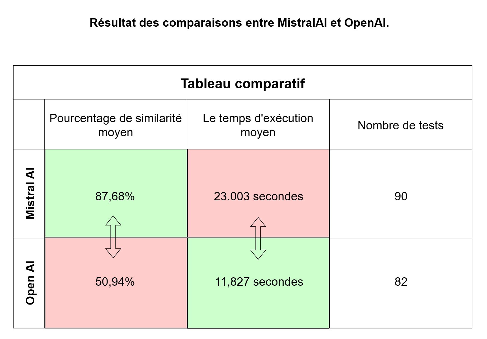

Mon travail sera inclus à l'API de l'entreprise. La finalité de ce projet est de permettre au client de pouvoir déposer un CV sur le site Beauté Job et l'utilisation de l'IA a pour but de mieux référencer les informations d'un candidat. Les recruteurs comme les candidats pourront donc faire des recherches plus pertinentes.
| B1 | B2 | B3 |
|---|---|---|
| B1.2 : Répondre aux incidents et aux demandes d’assistance et d’évolution | B2.1 : Concevoir et développer une solution applicative | B3.1 : Protéger les données à caractère personnel |
| B1.4 : Travailler en mode projet | B2.2 : Assurer la maintenance corrective ou évolutive d’une solution applicative | B3.2 : Préserver l'identité numérique de l’organisation |
| B1.5 : Mettre à disposition des utilisateurs un service informatique (orienté utilisateurs) | B3.4 : Garantir la disponibilité, l’intégrité et la confidentialité des services informatiques et des données de l’organisation face aux cyberattaques | |
| B1.6 : Organiser son développement professionnel |
Le langage PHP est choisi pour des raisons internes (meilleure expertise), mais aussi car le site Beauté Job est principalement codé dans ce langage, cela permettra donc de mieux intégrer le programme de recherche.
L'utilisation de l'Intelligence Artificielle est privilégiée car elle est plus fiable et flexible que l'utilisation de l'OCR de Tesseract et Parser pour extraire les informations.
L'utilisation de Parser a pour but d'aider l'IA à trouver des informations qu'elle ne parvient pas à trouver.
Tableau des technologies utilisées :
| Technologies | Intérêts | Limites |
|---|---|---|
| Parser et Tesseract | Récupérer le texte à partir de fichier PDF ou d'un fichier image | Le texte peut être inexact. La réponse n'est pas structurée. Les fichiers sans texte ne sont pas traités |
| Mistral AI (API) | Extraire des informations du CV et les mettre en forme. | Peut interpréter ou inventer. Le temps de réponse est plus ou moins long (en moyenne 25 secondes) selon le nombre d'informations à traiter. Les images peuvent ne pas être correctement traitées. Ne parvient pas à détecter les icônes dans le CV. |
Pour les icônes, l'IA ne parvient pas à les trouver. La solution serais d'utiliser des bibliothèques comme : OpenCV, TensorFlow (Hub), PyTorch/TorchVision, Keras ou YOLO. Cependant, ce moyen nécéssite l'utilisation de Python.
Lancement dans la console :
php phpUpload.php https://URL_CV.pdf
1) La récupération et vérification de l'URL, elle doit comporter http(s) et
.pdf.
2) La lecture du CV et extraction du texte avec de l'OCR s'il s'agit d'un fichier PDF.
3) Enregistrement de la date et l'heure dans une variable (pour les dates d'anniversaire).
4) La plus grande partie l'envoie de l'URL, de l'extraction OCR,
des
instructions et du format de réponse attendus à l'API
de Mistral pour extraire plus d'informations et les organiser dans le format souhaité (JSON).
5) Récupération des informations traitées et enregistrement dans un fichier .json.
Entre 1500 et 2000 tests du code sur une vingtaine de CV différents ont été effectuer lors de la production du code. Sur un écantillons de 110 tests, le code se trouve avec un taux de similarité de 88.05% pour un temps d'exécution de 22.255 secondes.

• L'utilisation de l'API de Mistral (et en parallèle l'API d'Open AI).
• Approfondissement de mes connaissances de PHP.
• Première utilisation de cURL pour l'appel d'une API.
• Utilisation de Postman pour automatiser les tests (premier travail sur ce
• logiciel).
• Meilleure utilisation et compréhension de l'IA.
• Apprendre à mieux expliquer quelque chose de technique sans aller dans les détails techniques.
• Avoir une meilleure compréhension du code.
• Avoir une meilleure compréhension sur les directives données.